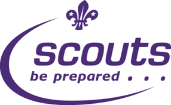

What Is SCOUTS

Scouts New Zealand, officially "The Scout Association of New Zealand" is the national Scouting association in New Zealand and an affiliate of the World Organization of the Scout Movement (WOSM) since 1953. The Scout Association of New Zealand uses the name SCOUTS New Zealand. Scouts New Zealand has 15,476 members, with 4,740 volunteers. The movement actively participates in many Asia-Pacific Region and World Scout camps and Jamborees. Working in conjunction with the World Organization of the Scout Movement, Scouts New Zealand now contributes towards the United Nations Sustainable Development Goals, through the Better World Framework. This framework consists of the Messengers of Peace initiative, Scouts of the World Award and the World Scout Environment Programme.
History Of Scouting
For the history of Scouting in New Zealand generally, from 1908 see Scouting in New Zealand. Membership emblem until 2008 In 1923, The Boy Scouts Association of the United Kingdom formed a branch in New Zealand and set about re-organising scouting according to its Policy, Organisation and Rules and establishing its Wolf Cubs and Rover programs. The Boy Scouts Association's New Zealand branch was incorporated in 1941 as The Boy Scouts Association (New Zealand Branch), Incorporated which changed its name to The Boy Scouts Association of New Zealand in 1956 and then to The Scout Association of New Zealand in 1967. The Scout Association of New Zealand uses the name SCOUTS New Zealand. Until 1953 the New Zealand branch was represented internationally through The Boy Scouts Association of the United Kingdom.[citation needed] In 1953, the New Zealand branch became a direct member of the World Organization of the Scout Movement. In 1963, the Venturer Scout section was introduced. In 1976, the first females became members of the Venturer section, on a trial basis. In 1979, females were formally admitted and the Venturer section became co-ed. In 1987, girls were formally admitted into the Scout section. This was followed by girls being admitted into the Kea and Cub programs in 1989. In 1979, Mr. Arthur W.V. Reeve was awarded the Bronze Wolf, the only distinction of the World Organization of the Scout Movement, awarded by the World Scout Committee for exceptional services to world Scouting.